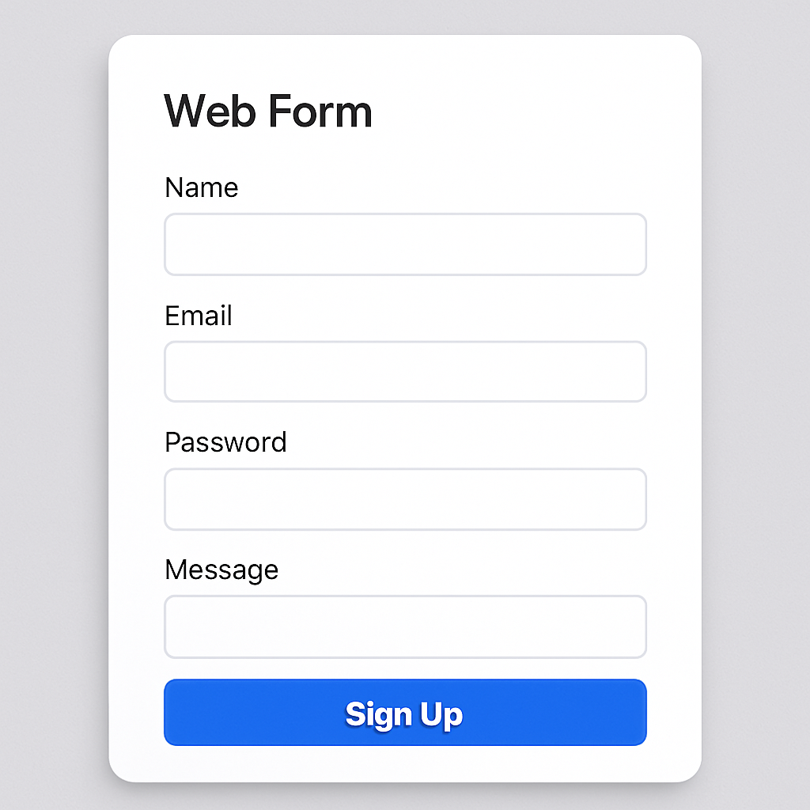

Tags de texto Voltar As tegs de texto são as mais básicas do HTML, usadas para estruturar o conteúdo textual de uma página. As principais tags são: h1 a h6 - usadas para definir títulos e subtítulos, sendo h1 o título principal e h6 o menor subtítulo. p - usada para definir parágrafos de texto. Elas possuem uma margem padrão que as separam umas das outras. strong - usada para destacar um texto importante dentre de um parágrafo ou título. É geralmente exibida em negrito. blockquote - usada para definir citações de outros outores ou fontes. Ela geralmente é exibida com uma margem maior e um recuo à esquerda. mark - usada para destacar um texto importante ou relevante, geralmente exibido com um fundo amarelo ou outra cor de destaque. i - usada para definir texto em itálico. É geralmente usada para enfatizar palavras ou frases. u - usada para definir texto sublinhado. É geralmente usada para destacar palavras ou frases de forma visual. br - usada para inserir quebras de linha dentro de um parágrafo ou texto sem criar um novo parágrafo. Ela não possui uma tag de fechamento. hr - usada para inserir uma linha horizontal que separa visualmente seções de conteúdo. Ela também não possui tag de fechamento. Inputs Voltar Inputs são elementos de formulário que permitem ao usuário inserir dados em uma página Web. Eles são usados para coletar informações do usuário, como nome, e-mail, senha e outros dados. Existem vários tipos de inputs disponíveis no HTML, cada um com uma finalidade específica. Alguns dos tipos mais comuns incluem: text - usado para inserir texto simples. É o tipo mais comum de input e permite que o usuário digite qualquer texto. number - usado para inserir números. Ele permite que o usuário digite apenas números, podendo ter um valor mínimo e máximo definido. email - usado para inserir endereços de e-mail de forma válida e formatada. Ele verifica se o endereço de e-mail digitado é válido antes de enviar o formulário ao servidor. password - usado para inserir senhas. Ele oculta o texto digitado, exibindo apenas pontos ou asteriscos para proteger a privacidade do usuário. Exemplo de formulário.  search - usado para inserir termos de pesquisa em um campo de busca. Ele geralmente exibe um ícone de lupa ao lado do campo. url - usado para inserir URLs. Ele verifica se o endereço digitado é um URL válido antes de enviar o formulário ao servidor. tel - usado para inserir números de telefone. Ele permite que o usuário digite apenas números e caracteres especiais, como parênteses e traços. date - usado para inserir datas em um formato específico. Ele exibe um seletor de data para facilitar a escolha da data pelo usuário e garantir que a data seja válida. mes - usado para inserir meses. Ele exibe um seletor, assim como o input de data, mas permite que o usuário escolha apenas o mês e o ano. checkbox - usado para criar caixas de seleção. Ele permite que o usuário selecione uma ou mais opções de uma lista. radio - usado para criar botões de opção. Ele permite que o usuário selecione apenas uma opção de uma lista de opções que se referem ao mesmo grupo de informações. Formulários Voltar Formulários são elementos HTML que permitem ao usuário enviar dados para o servidor. São usados para coletar informações do usuário usando as tags de input. Um formulário é definido pela tag form, que pode conter vários inputs e outros elementos, como botões de envio. O formulário pode ser enviado para o servidor usando o método GET ou POST, dependendo da finalidade do formulário. As tags usadas para criar formulários incluem: form - define o início e o fim do formulário. Pode ter atributos como action (URL para onde os dados serão enviados) e method (método de envio como GET ou POST). input - usado para criar campos de entrada de dados, como texto, número, e-mail, senha, etc. Cada input pode ter atributos como type (tipo de input), name (nome do campo) e value (valor padrão). label - usado para associar um rótulo a um campo de entrada. Ele melhora a acessibilidade e a usabilidade do formulário, permitindo que o usuário saiba o que deve ser inserido em cada campo. button - usado para criar botões dentro do formulário. Pode ser usado para enviar o formulário ou executar outras ações. O atributo type pode ser definido como submit (para enviar o formulário ao servidor) ou reset (para limpar os campos do formulário.) Exemplo Nome: Números: Data: Limpar select - usado para criar listas suspensas. Ele permite que o usuário escolha uma opção de uma lista de opções. As opções são definidas dentro da tag option. textarea - usado para criar áreas de texto maiores, onde o usuário pode inserir texto longo. Ela permite que o usuário digite várias linhas de texto e pode ter atributos como rows (número de linhas visíveis). fieldset - usado para agrupar elementos relacionados dentro de um formulário. Ele pede ser usado para organizar visualmente o formulário e melhorar a usabilidade. legend - usado para fornecer um título ou descrição para um grupo de elementos dentro de um fieldset. Melhora a acessibilidade e a compreensão do formulário. Listas Voltar As listas são usadas para agrupar itens relacionados em uma página Web. Elas podem ser ordenadas ou não ordenadas e são definidas por tags específicas. As principais tags de lista são: ul - usada para criar listas não ordenadas. As listas não ordenadas são, geralmente, exibidas com marcadores (bolinhas) antes de cada item da lista. ol - usada para criar listas ordenadas. As listas ordenadas são exibidas com números ou letras antes de cada item da lista, indicando a ordem dos itens. li - usada para definir cada item de uma lista, seja ordenada ou não ordenada. Deve ser usada dentro de uma tag ul ou ol. Todo o conteúdo desta página é organizado em listas, como você pode ver. Aqui vai um exemplo das ordenadas: Item Item Item Tabelas Voltar As tabelas são usadas para organizar dados em linhas e colunas, facilitando a visualização e comparação de informações. Elas são definidas por tags específicas e podem conter cabeçalhos, células de dados e rodapés. As principais tags de tabelas são: table - usada para definir o início e o fim de uma tabela. Contém todas as outras tags de tabela. tr - usada para definir uma linha de tabela. Cada linha pode conter várias células de dados. th - usada para definir células de cabeçalhos de tabela. Geralmente, são exibidas em negrito e centralizadas, sendo usadas para descrever o conteúdo de uma coluna ou linha. td - usada oara definir células de dados de tabela. Elas armazenam as informações reais da tabela, podendo conter texto, números, imagens ou outros elementos HTML. Exemplo Nome Idade Cidade Lucas 15 São Luís Mateus 21 São Paulo Ana 32 Fortaleza Total de pessoas: 3 Embed e Iframe Voltar As tags embed e iframe são usadas para incorporar conteúdo externo em uma página Web, como vídeos, mapas, documentos e outros recursos. Elas permitem que você exiba conteúdo de outras fontes sem precisar redirecionar o usuário para outra página. embed - usada para incorporar conteúdo multimídia, como vídeos, áudio ou animações. Ela pode ter atributos como src (URL do recurso) e type (tipo MIME do recurso). iframe - usada para incorporar uma página Web inteira dentro de outra página. Ela permite que você exiba conteúdo de outras páginas sem sair da página atual. Pode ter atributos como src (URL da página a ser incorporada), width (largura do iframe) e height (altura do iframe). Exemplo (embed) Exemplo (iframe) Tags de mídia Voltar As tags de mídia são usadas para incorporar conteúdo multimídia, como imagens, vídeos e áudio, em uma página Web. Elas permitem que você exiba e reproduza esses tipos de conteúdo diretamente na página. As principais tags de mídia são: img - usada para incorporar imagens em uma página. Ela pode ter atributos como src (URL da imagem), alt (texto alternativo para a imagem) e width (largura da imagem). video - usada para incorporar vídeos em uma página. Ela pode ter atributos como src (URL do vídeo), controls (exibe controles de reprodução) e autoplay (reproduz o vídeo automaticamente). audio - usada para incorporar áudio em uma página. Ela pode ter atributos como src (URL do áudio), controls (exibe controles de reprodução) e autoplay (reproduz o áudio automaticamente). Exemplo (img) Exemplo (video) Exemplo (audio)